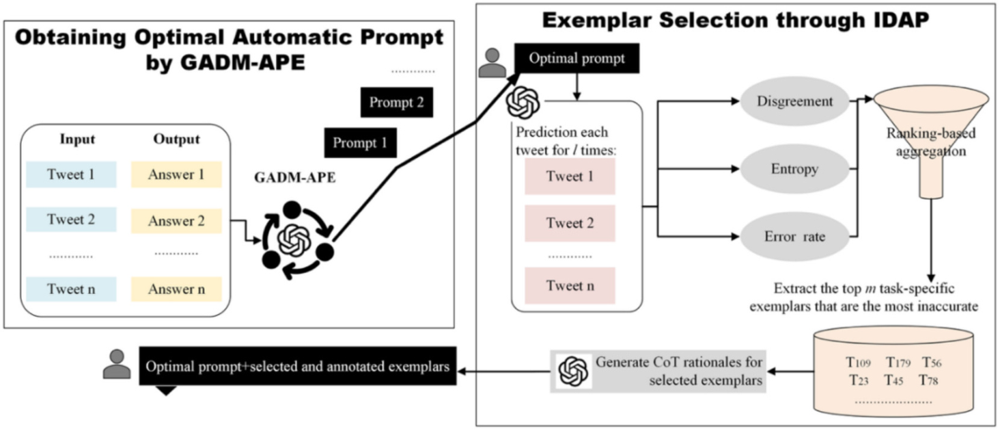
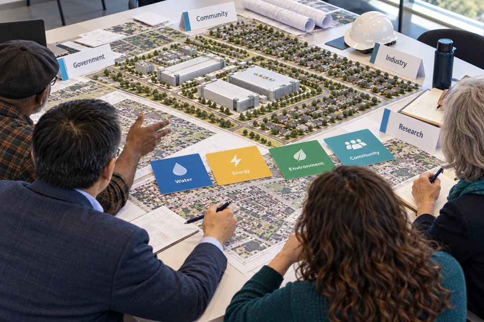
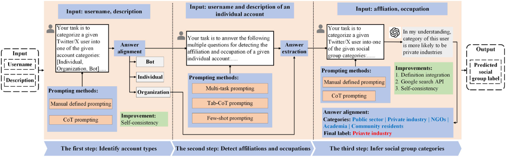
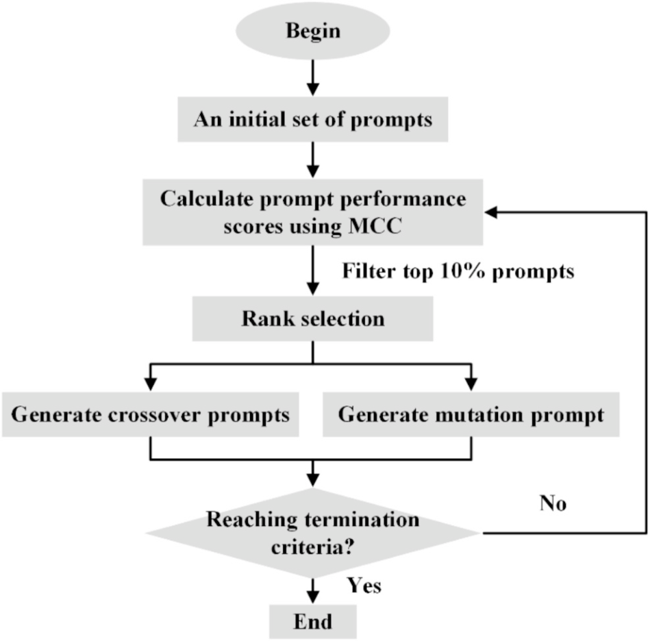

IDAP-APE: Human value identification
Identify multiple human values in social media posts through automatic prompting and inaccuracy-driven active prompting.
I’m a Ph.D. student at Virginia Tech, advised by Dr. Lu Zhang. My research vision is to develop AI-powered, human-centered lifecycle digital twins for resilient infrastructure systems. My current work brings together stakeholder value systems, multi-agent LLM systems, and human-supervised generative design for data center planning and design.
Human-centered AI for value-aware planning and human-supervised generative design of infrastructure systems.

Integrating stakeholder values into infrastructure delivery
Support shared decision-making among competing stakeholder priorities in real-world problems
Integrate stakeholder priorities and engineering constraints into data center design.

Identify multiple human values in social media posts through automatic prompting and inaccuracy-driven active prompting.

Classify social media users into stakeholder groups through a three-step prompting framework.

Optimize prompts within genetic search for tweet classification.